shell操作
基本格式
1 | #!/bin/bash #执行shell的脚本程序 |
shell中的特殊字符
1 | # 通配符 |
shell中变量的使用
1 | #对变量进行赋值，等号两边不能有空格 |
条件测试
1 | 注意： |
shell中的结构控制语句
1 | # if语句: |
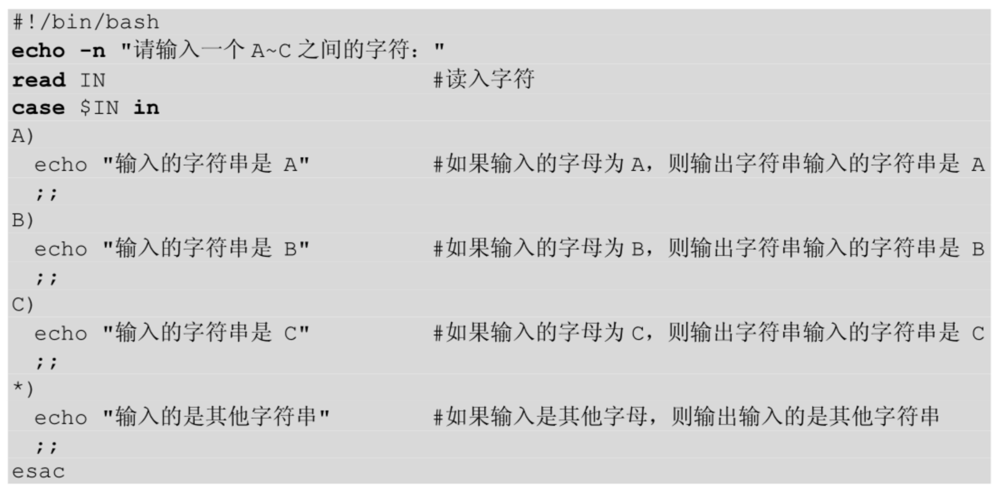
1 | # for循环语句 |
定义shell函数
1 | sum() |
c语言介绍
C语言主要用于底层开发，例如：
Windows、Linux、Unix 等操作系统的内核90%以上都使用C语言开发；
开发硬件驱动，让硬件和操作系统连接起来，这样用户才能使用硬件、程序员才能控制硬件；
单片机和嵌入式属于软硬件的结合，有很多使用C语言的地方；
开发系统组件或服务，用于支撑上层应用；
编写PHP扩展，增强PHP的功能；
如果对软件某个模块（例如算法和搜索部分）的效率要求较高，也可以使用C语言来开发。
既然C语言能做这么多事情，为什么很多初学者学完C语言以后仍然非常迷茫，只能编写没有界面的控制台程序呢？
这是因为，C语言仅仅是一个工具，它的标准库也很简单，只提供了最基本的功能，如果希望开发出实用的程序，往往还需要学习其他方面的知识。例如：
开发硬件驱动要学习数字电路，了解 Windows 或 Linux 内核，阅读硬件厂商的接口说明书；
从事嵌入式开发要学习数字电路、模拟电路、ARM、Linux、Qt等；
开发PC软件要学习Windows编程，了解 GTK。
基础
语法，注释
1 |
|
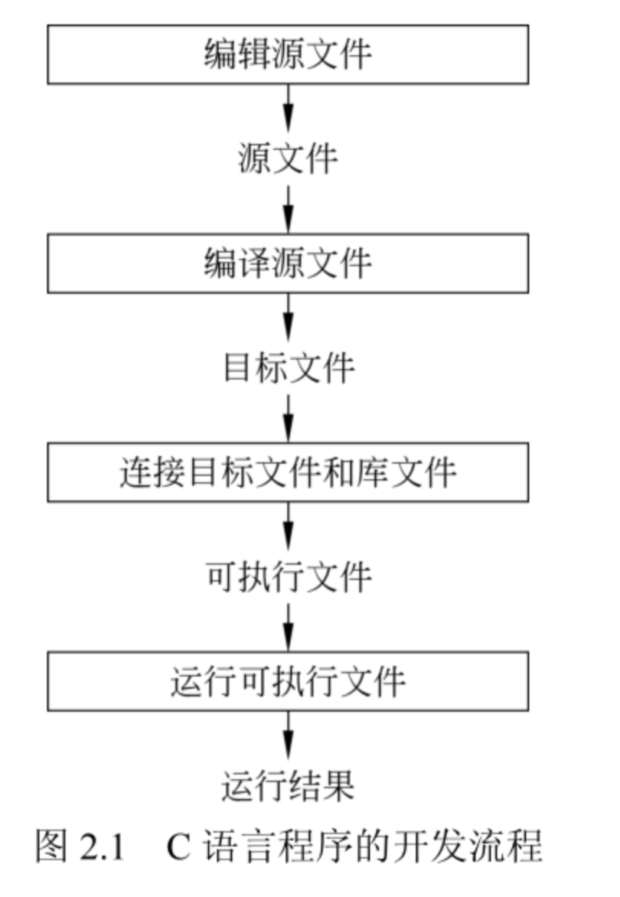
c语言大致可以分为两类：一类为说明语句，用来描述数据，决定内存的分配；另一类为执行语句，用来对数据进行操作，决定内存的内容；
注意：c语言区分大小写，关键字都必须使用小写字母
转义字符
1 | \a 响铃 |
数据类型
基本类型：char,int,float,double,void(空值型)
聚合类型：数组，结构，联合和枚举等
各种数据类型转化；
基本类型
1 | 类型 存储大小 值范围 |
sizeof: 获取一个数据类型的宽度。
1 |
|
getconf命令[bash命令]：查看处理器的字长，也可以查看其它参数，如整形数据的取值范围
1 | getconf LONG_BIT #查看处理器字长 |
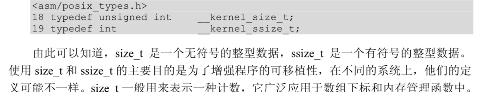
数组
数组分一维数组和多维数组，最常用的为而为数组；
一维数组初始化
1 | 数组名称[下标] |
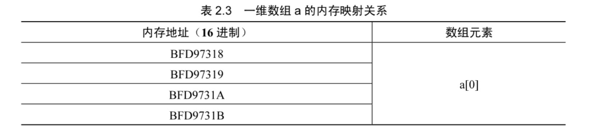
二维数组和多维数组初始化
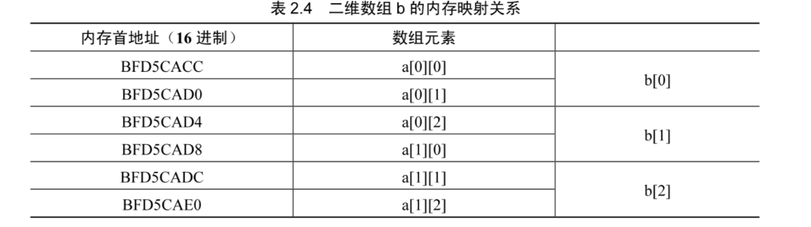
1 | int a[2][3]; #先定义后赋值 |
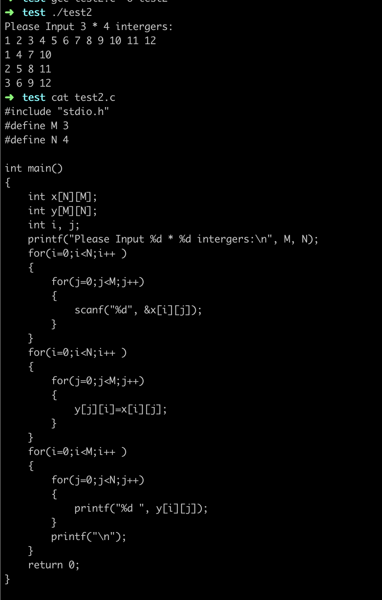
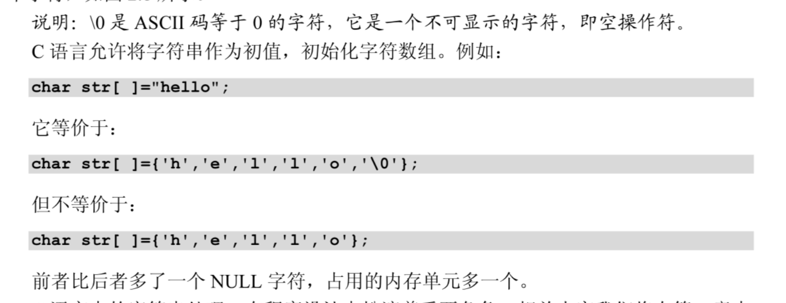
参考练习：https://www.cnblogs.com/lixiaomingr/p/7918646.html
常用运算符
1 | 1.算法运算符 |
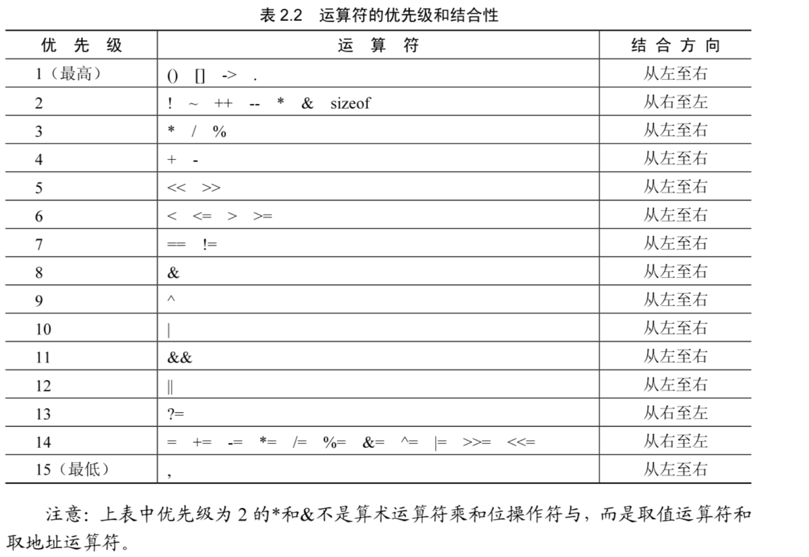
常量
常量是固定值，在程序执行期间不会改变。这些固定的值，又叫做字面量。
常量可以是任何的基本数据类型，比如整数常量、浮点常量、字符常量，或字符串字面值，也有枚举常量。
1 | 212 /* 合法的 */ |
在 C 中，有两种简单的定义常量的方式：
使用 #define 预处理器。
使用 const 关键字。
1 |
|
1 |
|
变量
变量其实只不过是程序可操作的存储区的名称。C中每个变量都有特定的类型，类型决定了变量存储的大小和布局，该范围内的值都可以存储在内存中，运算符可应用于变量上。
变量的名称可以由字母、数字和下划线字符组成。它必须以字母或下划线开头。大写字母和小写字母是不同的，因为 C 是大小写敏感的。
1 | 变量的声明有两种情况： |
表达式语句
1 | 1.if/switch语句 |
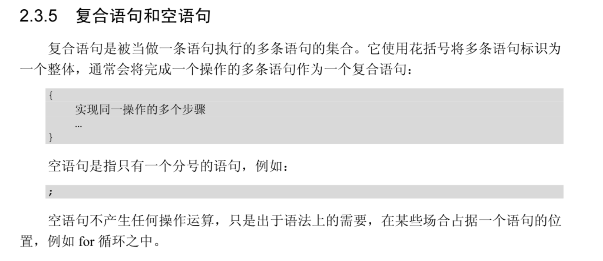
预处理
1.宏定义
1 |
|
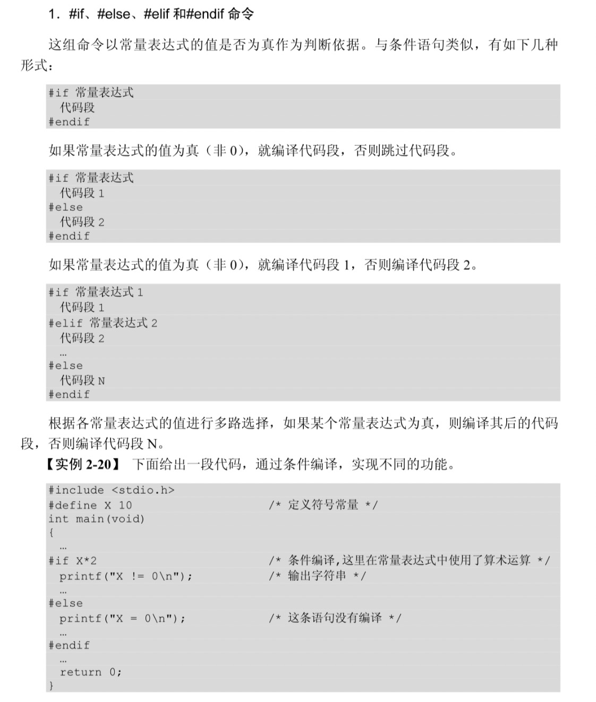
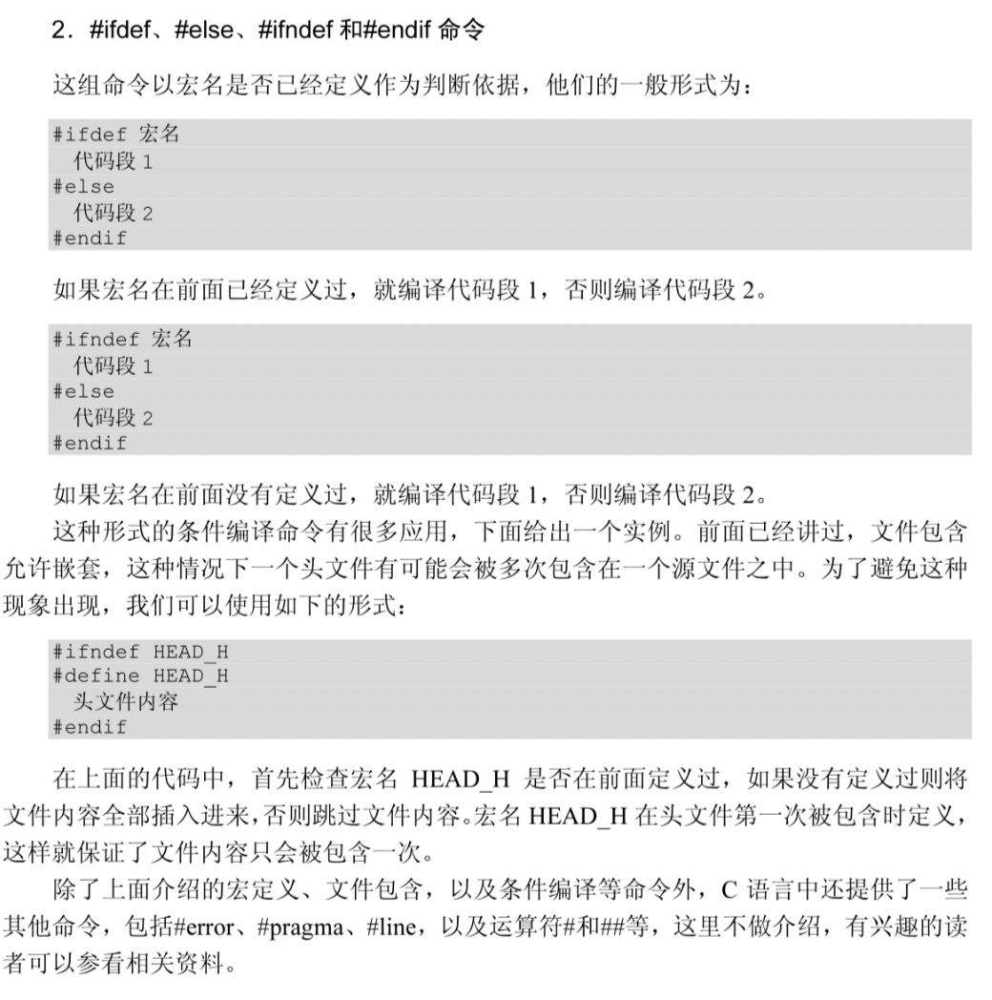
存储类
1 | auto 只能用在函数内，即 auto 只能修饰局部变量。 |
函数返回
1 | 1.函数返回为空: C 中有各种函数都不返回值，或者您可以说它们返回空。不返回值的函数的返回类型为空。例如 void exit (int status); |
linux创建子进程
1 |
|
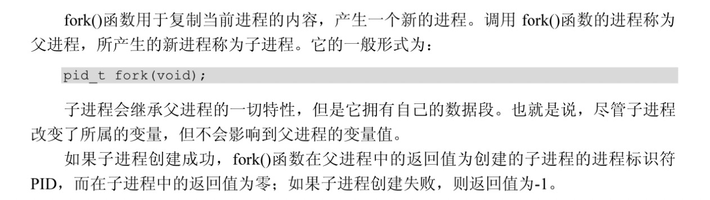
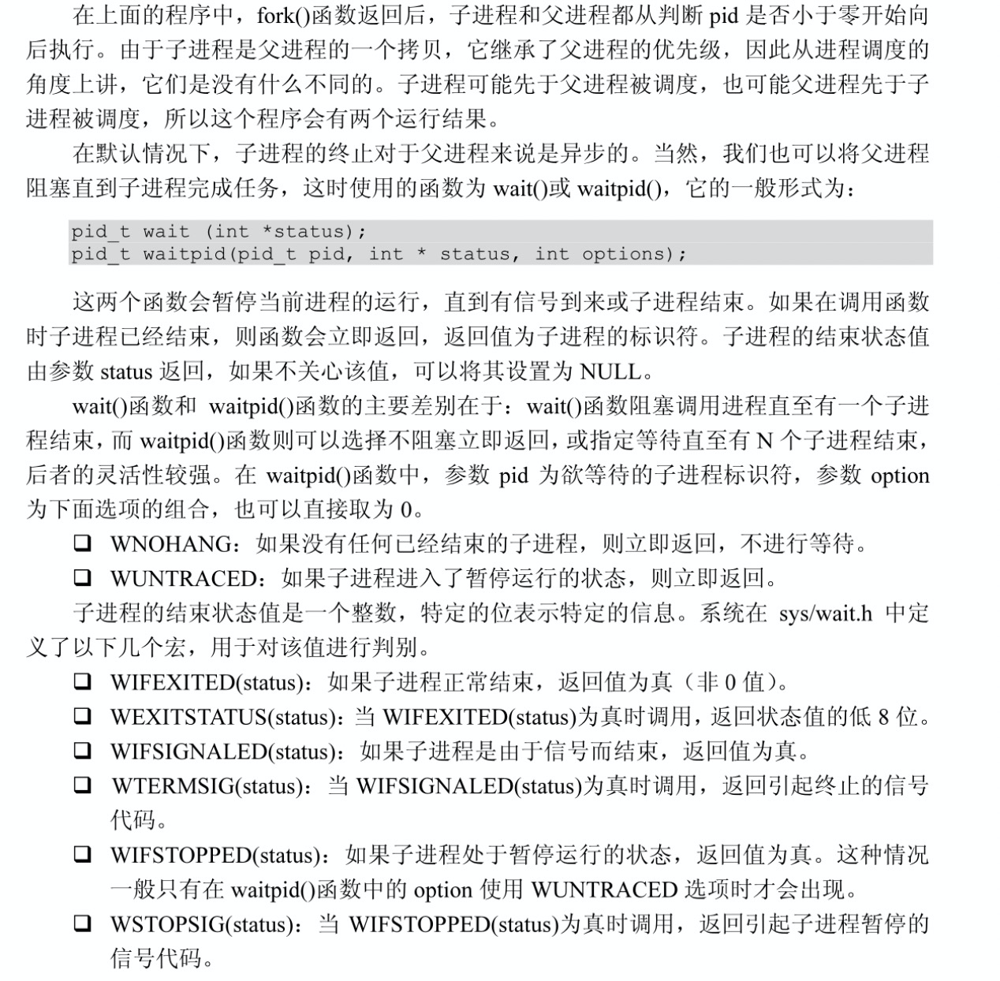
linux创建守护进程
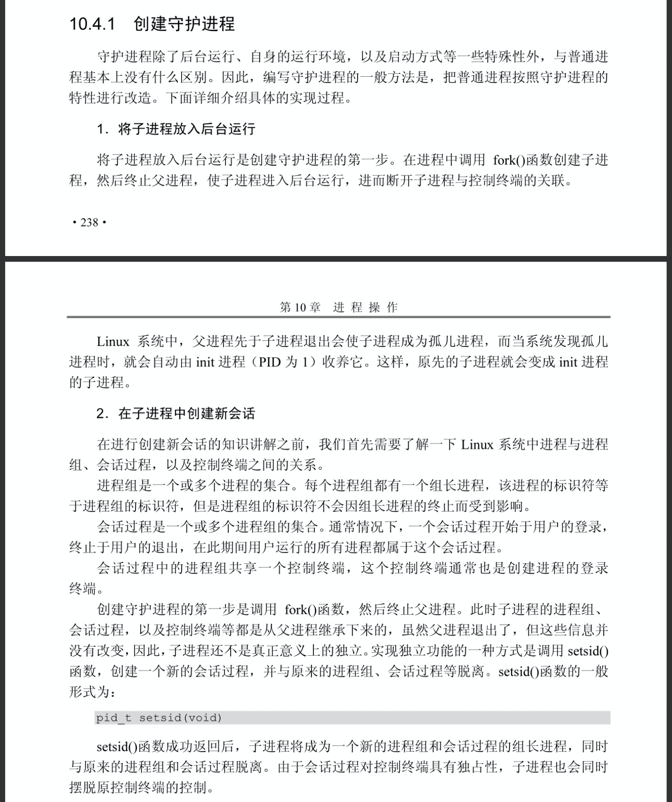
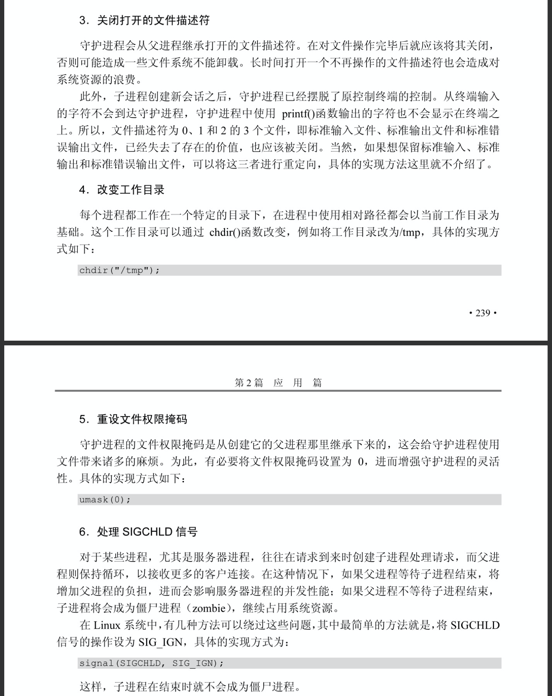
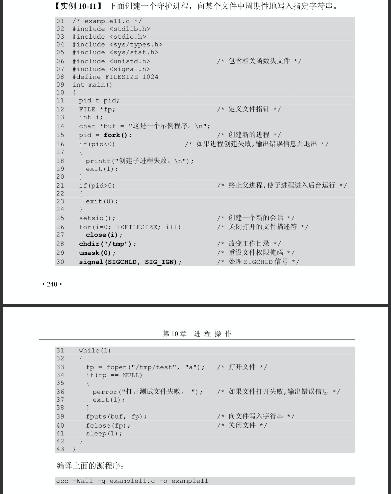
1 |
linux进程间的通信
管道
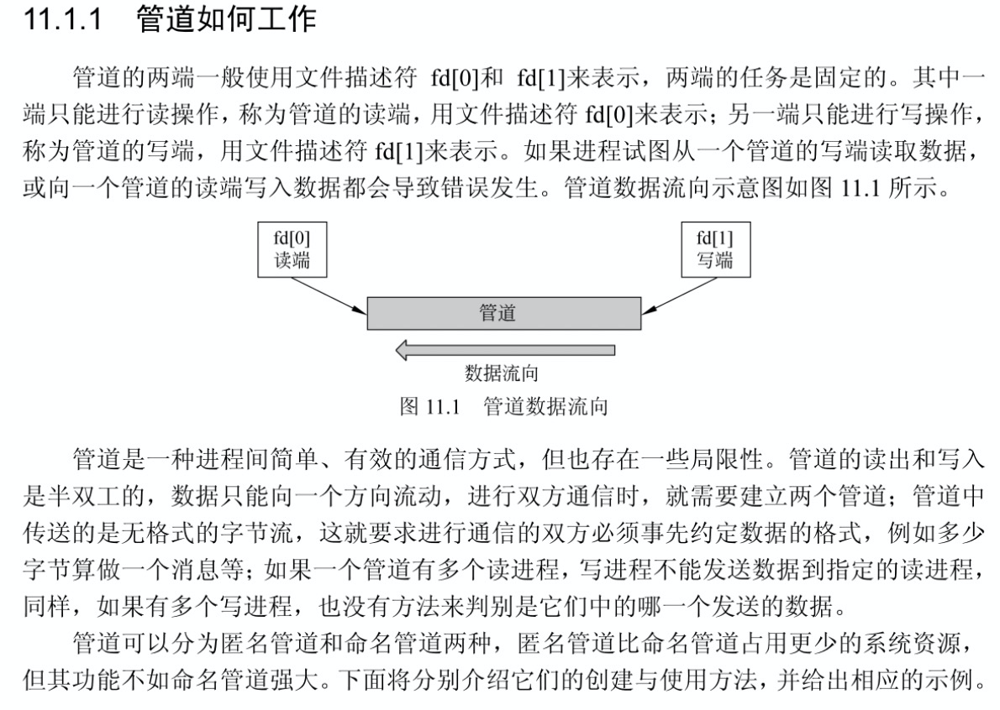
1 |
|
todo
https://cloud.tencent.com/developer/news/148736
学到了数组和指针, 数据之间的类型转换，数据合并，分割，截取等操作
线程,内存分配，堆，栈,常用的类
其它
printf 不管什么类型的值都按照 %d %f %u %lld 的类型输出(不会进行类型转换，直接输出乱码)，如果不是相同类型需要进行强制类型转化；
for example:
printf(“test~~%d”,(int)10.3)
Notice: num=1 and num=”1” 一个是数字一个是字符
计算机数据都是按照补码的方式存储在内存里面；（补码是在反码的基础上加1；正数的原码和反码和补码都一样）
符号：
~ 数据在内存二进制的数字取反（如：~74）
<< 左移（用于内存二进制数,ch<<1,如：ch的值左移1一位;但不会改变ch的值,如果要改值需要赋值）
字符类型：
*p 指针占4个字节（也就是32位） 0000 0000 0000 0000 0000 0000 0000 0000
char类型1个字节(也就是8位)0000 0000
& 计算：只要有一个为0，其结果就为0
| 和^ 或和异或：只要有一个为1，其结果为1;(异或有个差别就是两个都为1时，其结果为0)
<<= 符合运算符：相当于左移数据后并赋值
&= for example:
int ch = 4
ch &=1 等于 ch= ch&1(也是二进制数据对比,就是ch的二进制与1的二进制进行&运算)
位运算只能操作整数和字符，不适用于实数运算，实数是以指数的方式表示
无符号（整数）的数据在进行位运算的时候，需要自动进行转换:
低字节向高字节转换的时候，会自动填充0
有符号（负数） 在进行位运算的时候，需要自动进行转换:
低字节向高字节转换的时候；
正数会按照符号位0自动填充0；负数会按照符号位1自动填充1
负数在位运算右移的时候会自动填充1，整数填充0；左移都是填充0
位“反”、“与”、“或”、“异或”运算符不关心操作数的符号，知识按操作数所在字节的0、1序列进行对比，符号位会被当成普通的0或1进行处理
|
1|1 1 0|1 0
1|0 1 0|0 0
端口扫描样本:
http://blog.csdn.net/u011721501/article/details/38642133